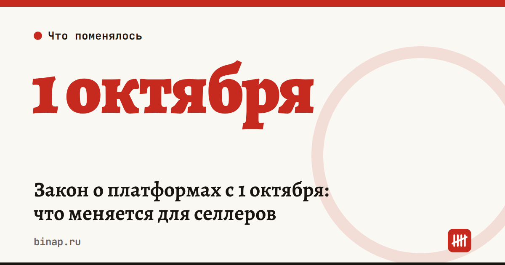

Закон о платформах с 1 октября: что меняется для селлеров

С 1 октября 2026 года работает закон о платформенной экономике. Маркетплейсы впервые получили статус цифровых посредников с обязанностями не только перед покупателями, но и перед продавцами.
Коротко
- Площадка не может включить товар в распродажу без согласия продавца и наказывать за отказ участвовать в акции.
- Об изменении условий договора площадка должна предупреждать заранее.
- Акт сверки по взаиморасчётам площадка обязана выдать в течение 7 рабочих дней по запросу продавца.
- Перед судом — жалоба через внутреннюю систему маркетплейса, срок ответа — 15 дней.
- Площадки проверяют продавцов по госреестрам и сертификаты на товары, где они обязательны.
Сроки, изменения и разборы для ИП и самозанятых — каждое утро в Telegram и MAX. Подпишитесь, чтобы не пропустить.
Что меняется для продавца
| Было | Стало с 1 октября 2026 года |
|---|---|
| Товар могли включить в акцию без спроса | только с согласия продавца, без штрафов и понижения рейтинга за отказ |
| Условия меняли в любой момент | об изменениях — заблаговременное предупреждение |
| Документы по расчётам — по ситуации | акт сверки и документы — за 7 рабочих дней |
| Споры — сразу в суд или в поддержку без сроков | сначала внутренняя жалоба, ответ — 15 дней |
| Проверка продавца — по правилам площадки | сверка с госреестрами и проверка сертификатов |
Что сделать на этой неделе
- Зайдите в кабинеты Wildberries и Ozon и выпишите акции, в которых товар участвует сейчас. Если согласия вы не давали — зафиксируйте это скриншотом.
- Запросите акт сверки за последний квартал: так вы проверите новую обязанность площадки и свои взаиморасчёты.
- Проверьте, что реквизиты ИП или ООО в кабинете совпадают с ЕГРИП или ЕГРЮЛ, а сертификаты на товары действуют.
- Возникла спорная ситуация — сначала подайте жалобу через внутреннюю систему площадки и сохраните её номер и дату: без этого суд может не принять иск.
- Следите за уведомлениями об изменении условий и пересчитывайте экономику товара, как только они приходят.
Как площадки сверяют данные продавцов с налоговой — в статье маркетплейсы проверяют продавцов. Почему возвращают товар и что поменять в карточке — в разборе возвраты с помощью нейросети.
Точные формулировки и переходные положения сверяйте с текстом закона — ссылки на разборы ниже.
Частые вопросы
Может ли маркетплейс включить мой товар в акцию без согласия? Нет. С 1 октября 2026 года — только с согласия продавца, и без штрафов или понижения рейтинга за отказ.
За сколько дней площадка обязана выдать акт сверки? За 7 рабочих дней с запроса продавца.
Можно ли сразу подать в суд на маркетплейс? Сначала нужно подать жалобу через внутреннюю систему площадки. Срок ответа — 15 дней.